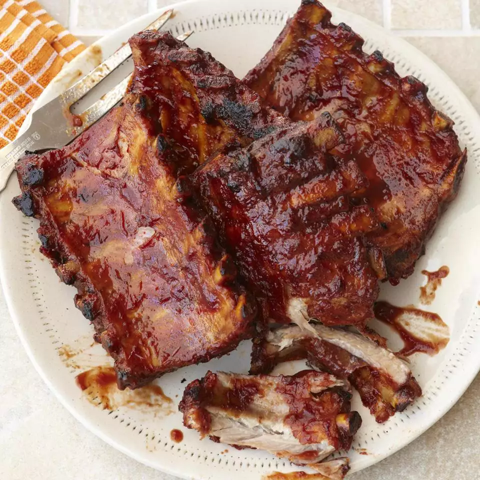

There's something about the easy-going days of summer that makes you want to pick up your food and eat it with your hands. Case in point: barbequed ribs. Sure, you could take your knife and fork to them, but you'd miss all the pleasure of pulling the meat off the bone with your teeth and licking every last bit of sauce and spices off your fingers. Scroll through to see which of our best barbeque rib recipes will have you licking your fingers all summer long.
No grill? No problem! These top-rated pork baby back ribs are cooked low and slow in your crockpot or slow cooker until perfectly tooth-tender. To keep them from getting greasy, you'll bake them in the oven for 30 minutes, drain off the fat, and finish in the slow cooker. Many reviewers cooked the ribs in their favorite homemade or store-bought barbeque sauce and loved the results.